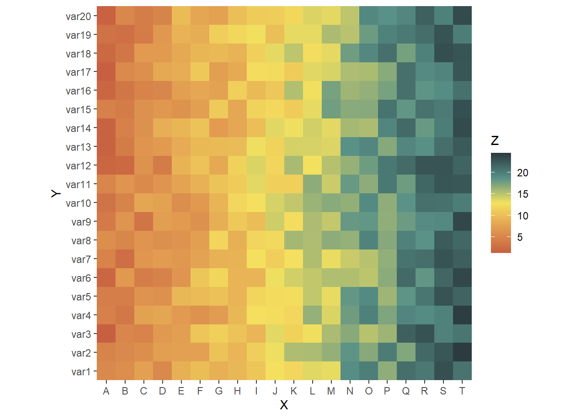
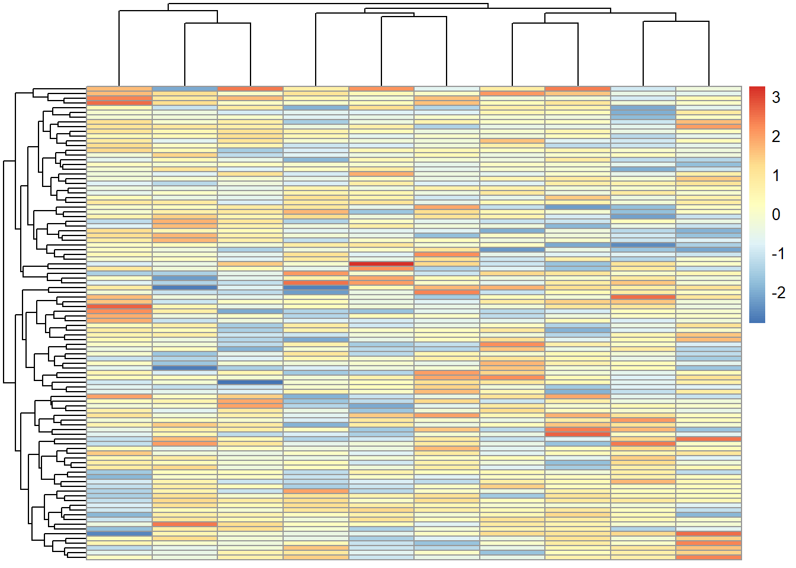
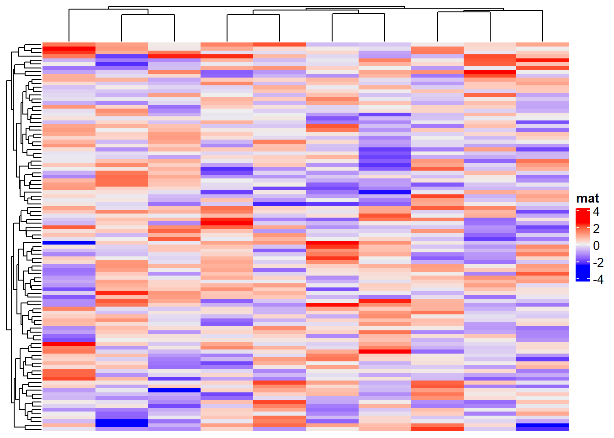
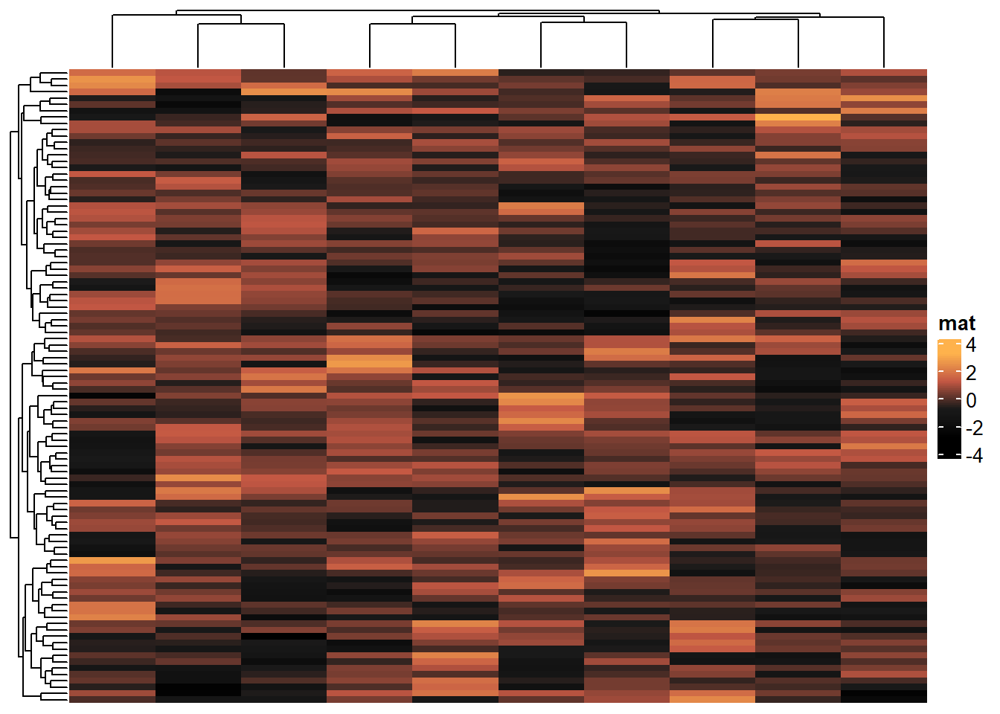
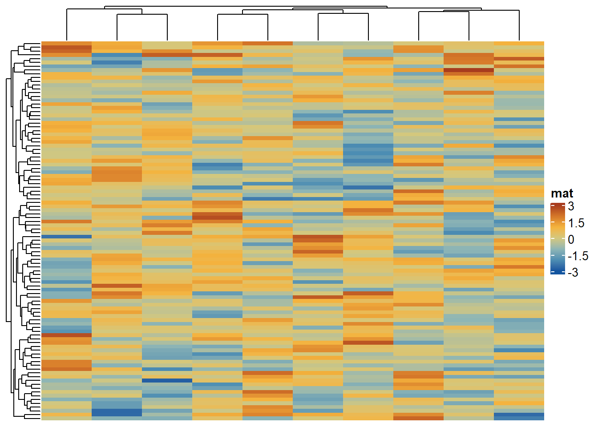

8 Heatmap
In this chapter, we introduce the heatmap in ggplot2, pheatmap and ComplexHeatmap styles.
Install related packages
install.packages(c("ggplot2","pheatmap","ComplexHeatmap"))Load packages and create dummy data
library(ggplot2)
library(pheatmap)
library(ComplexHeatmap)
library(paintingr) # for generation of color palettes
# Dummy data
x <- LETTERS[1:20]
y <- paste0("var", seq(1,20))
dum.data <- expand.grid(X=x, Y=y)
dum.data$Z <- seq(1,20)+runif(400, 0, 5)
head(dum.data)## X Y Z
## 1 A var1 5.449923
## 2 B var1 5.902715
## 3 C var1 7.513017
## 4 D var1 5.348068
## 5 E var1 8.868486
## 6 F var1 9.8885548.1 ggplot2
Basic heatmap in ggplot2 style (geom_tile)
# Heatmap
pal <- paint_palette("Autumn", n=100, type="continuous")
ggplot(dum.data, aes(X, Y, fill= Z)) +
geom_tile() +
scale_fill_gradientn(colours = pal) +
scale_x_discrete(expand = c(0, 0)) +
scale_y_discrete(expand = c(0, 0)) +
coord_equal() 
8.2 pheatmap
Both pheatmap and ComplexHeatmap require matrix like input
# Dummy data
set.seed(123)
dum.mat <- matrix(rnorm(1000), ncol=10)
head(dum.mat)## [,1] [,2] [,3] [,4] [,5] [,6]
## [1,] -0.56047565 -0.71040656 2.1988103 -0.7152422 -0.07355602 -0.60189285
## [2,] -0.23017749 0.25688371 1.3124130 -0.7526890 -1.16865142 -0.99369859
## [3,] 1.55870831 -0.24669188 -0.2651451 -0.9385387 -0.63474826 1.02678506
## [4,] 0.07050839 -0.34754260 0.5431941 -1.0525133 -0.02884155 0.75106130
## [5,] 0.12928774 -0.95161857 -0.4143399 -0.4371595 0.67069597 -1.50916654
## [6,] 1.71506499 -0.04502772 -0.4762469 0.3311792 -1.65054654 -0.09514745
## [,7] [,8] [,9] [,10]
## [1,] 1.07401226 -0.7282191 0.3562833 -1.0141142
## [2,] -0.02734697 -1.5404424 -0.6580102 -0.7913139
## [3,] -0.03333034 -0.6930946 0.8552022 0.2995937
## [4,] -1.51606762 0.1188494 1.1529362 1.6390519
## [5,] 0.79038534 -1.3647095 0.2762746 1.0846170
## [6,] -0.21073418 0.5899827 0.1441047 -0.6245675Create basic pheatmap
pheatmap::pheatmap(dum.mat)
8.3 ComplexHeatmap
Create basic ComplexHeatmap
ComplexHeatmap::Heatmap(dum.mat, name="mat")
8.3.1 Control color
Pass vector of colors to change the color
ComplexHeatmap::Heatmap(dum.mat, name="mat", col=paint_palette("Vesuvius"))
Color of ComplexHeatmap can also be modified with a color mapping function.
# generate color mapping function
col_fun <- circlize::colorRamp2(breaks = seq(-3,3),
colors = paint_palette("Twilight",7,"continuous"))
ComplexHeatmap::Heatmap(dum.mat,
name="mat",
col=col_fun,
heatmap_legend_param = list(at = c(-3,-1.5,0,1.5,3)) # control breaks of heatmap legend
)